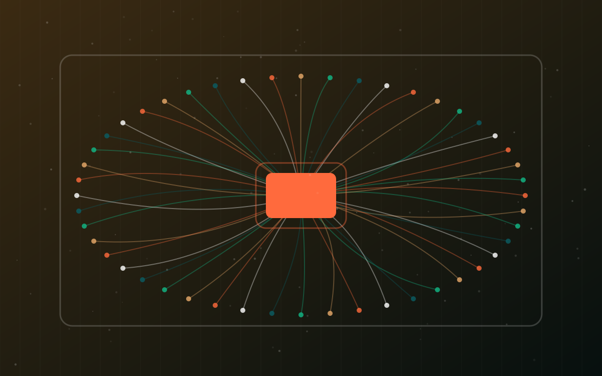

The Signal · Issue 10 · India & Emerging Markets
Sarvam's new open model is built for Indian-language customer service at a fraction of rivals' prices, and fits on one GPU in your own building
Sarvam released Sarvam-105B-1711 on 22 November with open weights, a blended price of $0.15 per million tokens and a 4-bit version that fits on a single workstation GPU. On Sarvam's own tests it matches a Google model priced more than five times higher on conversational agent work. Its own throughput table also shows what one GPU can and cannot carry.

Facts are attributed and linked to their sources. The analysis and opinions are the author's own.
What it is
On 22 November Bengaluru-based Sarvam released Sarvam-105B-1711, a new open-weight checkpoint of its 105-billion-parameter model, built for high-volume work such as customer support, voice agents and agentic tasks. According to the model card, it is a mixture-of-experts model with 10.3 billion parameters active at a time. The weights are on Hugging Face in BF16 and in a 65 GB NVFP4 version that Sarvam says fits on a single RTX PRO 6000 Blackwell workstation GPU, "so banks, government departments and strategic sectors can run it on their own premises." Sarvam says inference optimisations cut its blended price by two-thirds, from $0.44 to $0.15 per million tokens.
Sarvam's headline comparison is on eight conversational agent benchmarks, where it says the model averages 73.9 at $0.15 per million tokens, against 74.0 for Gemini 3.5 Flash-Lite at $0.85 and 73.0 for Gemma 4 31B at $0.54. Since its February release, Sarvam reports, instruction following on IFBench rose from 32.5 to 82.5, tool use in customer-service conversations on Tau2 from 46.2 to 85.5, and its internal Indian-language suite from 30.1 to 79.1. It says the model completed 69.5% of Tau2 customer-service tasks correctly in all four attempts, against 63.9% for Gemini 3.5 Flash-Lite and 62.1% for Gemma 4 31B. The model card notes that all scores are from Sarvam's own runs, and that the Indic suite is internal and judged by another model. It also shows weaker results on some knowledge tests, such as 12.3 on Humanity's Last Exam against 22.1 for Gemma 4 31B.
Why it matters
Issue 07 reported that India wants its most sensitive systems on Indian AI. This release is the practical version of that ambition for one of the commonest uses: answering customers in their own language, consistently, without sending the conversation abroad. Consistency across repeated attempts is the right thing to measure for customer service, where one bad answer in four is a complaint.
The model card also contains the number a buyer should look at before the headline. On one RTX PRO 6000 at a 50,000-token context, a single user gets about 62 tokens per second, but with eight concurrent users each gets about 12, and the median wait for the first token rises to 19.5 seconds. On a data-centre B200 the same model serves 64 users at about 122 tokens per second each.
One GPU in your own building is a pilot. Plan production on the concurrency table, not the headline.
In my view that makes the workstation version a strong option for a private pilot, an internal tool or a low-volume back office, and the data-centre version the one to size for a contact centre. Either way, the claim that matters for an Indian bank or insurer is the Indian-language score, and that needs testing on its own customers' real conversations, not Sarvam's internal suite.
What I'd watch
- Independent evaluations of Indian-language quality, especially on code-mixed speech and regional languages.
- The licence terms for commercial use, which buyers should read on the model card before any pilot.
- Whether regulated Indian firms run it on premises in production, and what concurrency they need to do so.
Sources
- Introducing Sarvam-105B-1711 Sarvam AI, 22 Nov 2026.
- sarvamai/sarvam-105b-1711 model card Hugging Face, Nov 2026.